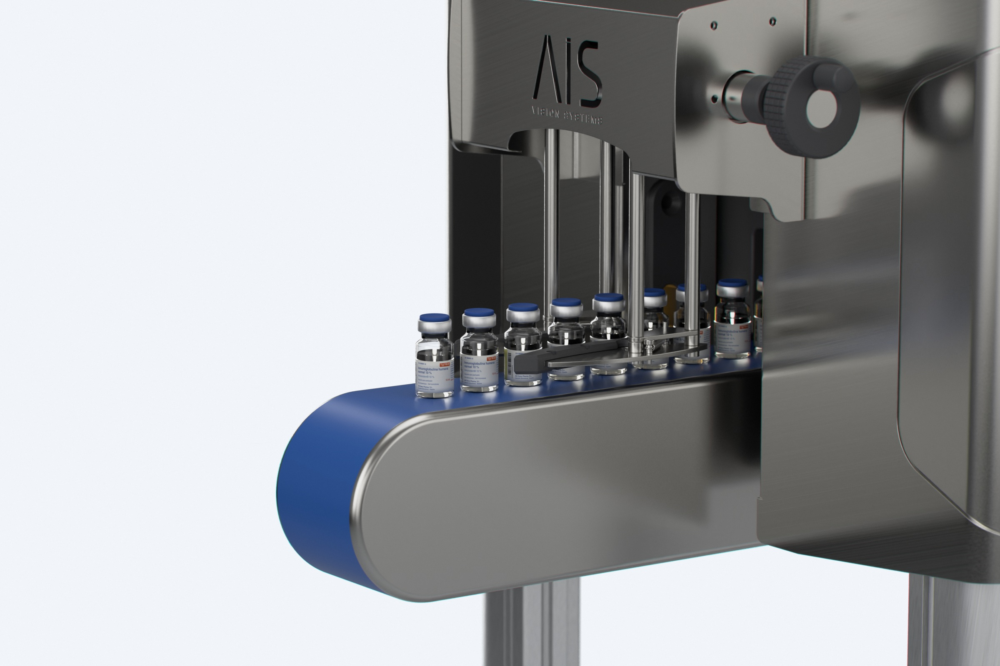
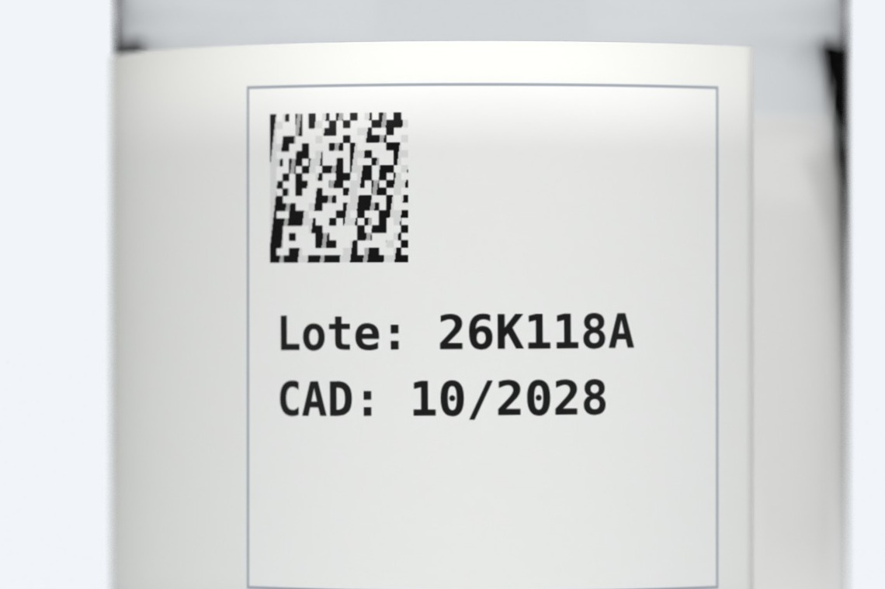
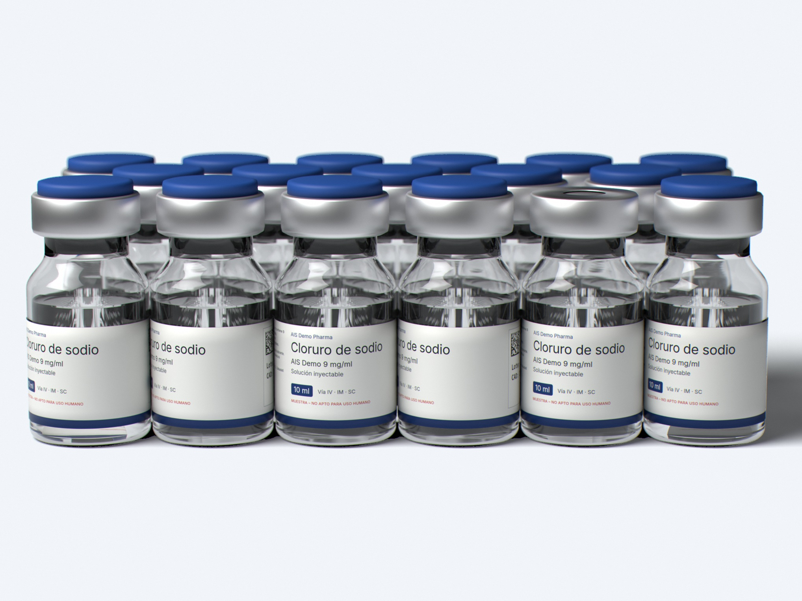

Inspección visual de etiquetas en viales y envases farmacéuticos pequeños, a 360°. Analiza el 100 % de la producción, hasta 18 000 unidades/hora.

Cuatro cámaras laterales: la etiqueta a 360°
Aprendizaje profundo: la etiqueta y sus datos, durante la producción
21 CFR Part 11: audit trail completo y acceso por directorio activo
Cada etiqueta, en todo su perímetro
La visión en color revisa la presencia, la orientación y el contenido de las etiquetas, incluidos los marcajes de trazabilidad: detecta marcajes incompletos o ilegibles, y lee y comprueba el código de cada vial.
Etiqueta ausente o incorrecta
Etiqueta desalineada
Orientación incorrecta
Lectura de lote y caducidad

Data Matrix y código de barras
Lectura del número de serie
Contenido regulatorio de la etiqueta
Formato, inspección y control
Especificaciones para la integración del equipo en la línea. La cadencia depende del formato y de las inspecciones configuradas.
Equipo
Formatos compatibles
Hasta 207 mm de altura y 140 mm de diámetro (versión Lite)
Diseño
Fabricado en INOX 304
Cadencia máxima
Hasta 18 000 unidades/hora, según el número de inspecciones
Separación mínima
80 mm
Cámaras
4 cámaras en color de alta resolución
Iluminador
7200 LED, con controlador diseñado por AIS Vision Systems
Dimensiones
600 × 600 mm
Controladora
FPGA para la gestión inmediata de señales digitales
Integridad de los datos
Pista de auditoría (audit trail) completa; conexión con el directorio activo (AD)
Instalación y manejo
Panel de control
Pantalla táctil de 21 pulgadas para visualizar y ajustar el sistema
Señalización
Baliza luminosa de estado del equipo
Instalación eléctrica
Alimentación monofásica en el punto de instalación
Mecánica
Acceso para limpieza y mantenimiento; guiado adaptado a la línea
Viales entrando en el túnel de inspección por la cinta de transporte.
De la imagen a la acción
Ajuste de recetas, análisis de imágenes y registro de resultados en un mismo entorno de producción.

Viales y envases pequeños con etiquetado y códigos de trazabilidad.
Software
Profiler
Crea recetas a partir de un envase o de su diseño digital; ajusta las tolerancias de tamaño, posición y relación entre etiquetas. Vista desplegada de envases circulares, cuadrados, ovalados o irregulares
Auto Labeling y Smart Labeling
Localización asistida de elementos y anotación de regiones para preparar el conjunto de datos
UltraOCR
Lectura de lotes, caducidades y números de serie con distintas perspectivas, contrastes y calidades de impresión
AutoDetect
Localiza textos, logotipos, códigos y contenido regulatorio para seleccionar los controles
Integridad de los datos
Pista de auditoría completa y conexión con directorio activo (AD). Funciones para 21 CFR Part 11
Rosepetal
Modelos precargados, entrenamiento con ejemplos, recetas y estadísticas en la nube y supervisión web con acceso seguro. Generación de imágenes OK/NOK para acelerar el entrenamiento
Opciones de integración
Rechazo progresivo o por impacto, zona de acumulación del producto rechazado, cintas de transporte, centrador de producto y TrazAIS: trazabilidad y serialización. Cámara cenital, lectura de marcaje láser o de tinta y expulsor AIS PRO 8 de cinco pistones o expulsor de empuje.